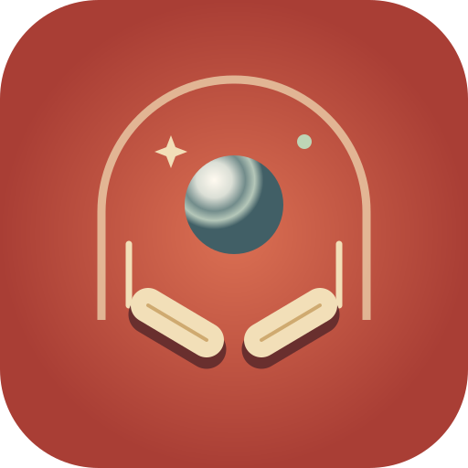

More tables are coming.
Turn on JavaScript to play pinball.
Make yourself at home.
Starbound Parlor is your first table. More tables are coming.
In Safari, tap Share ↥, then Add to Home Screen and Add. If shown, keep Open as Web App on.
Your own app icon. Full-screen play. Offline pinball after the first online visit.